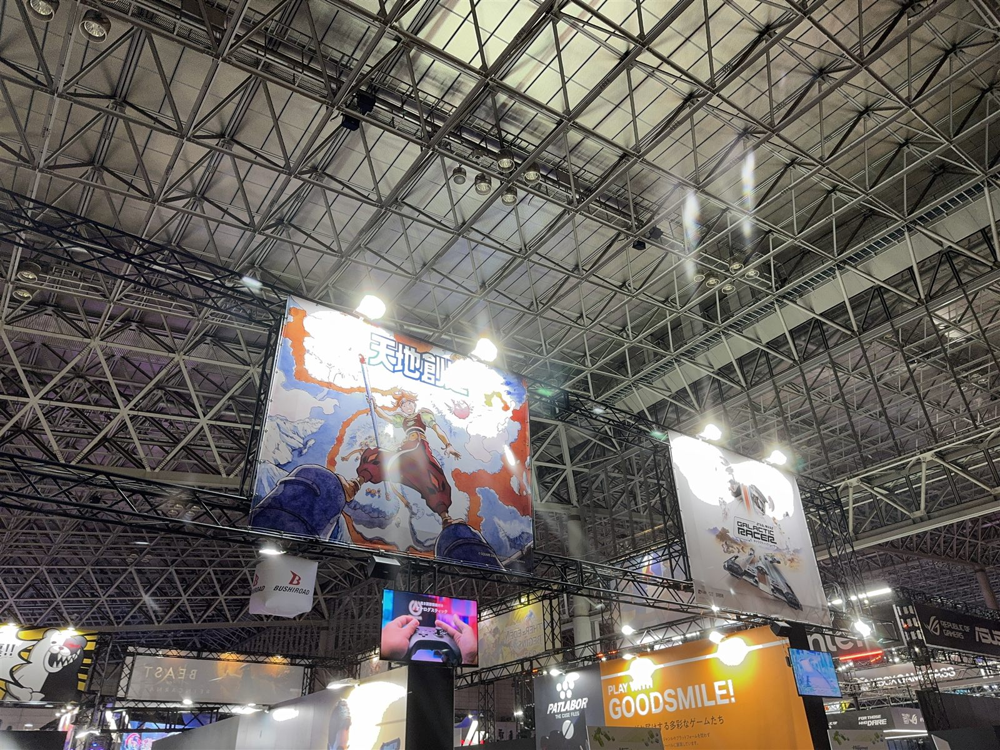
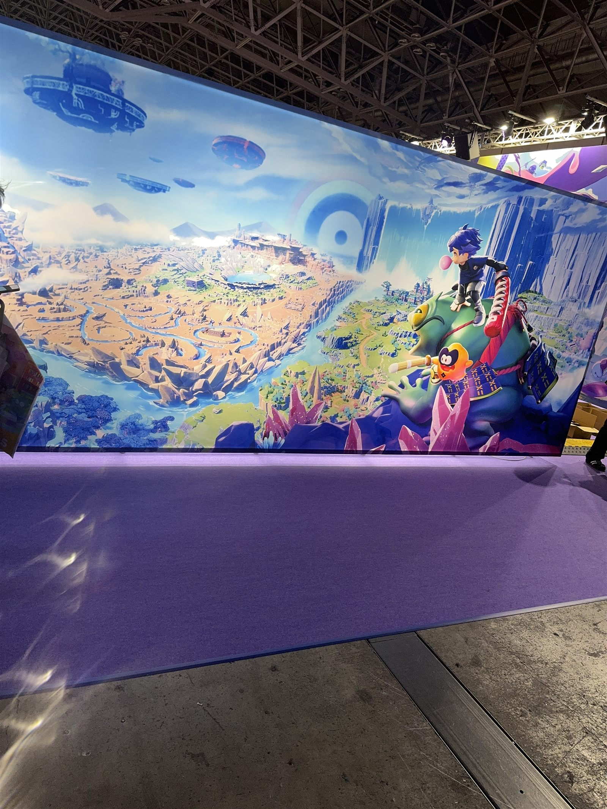
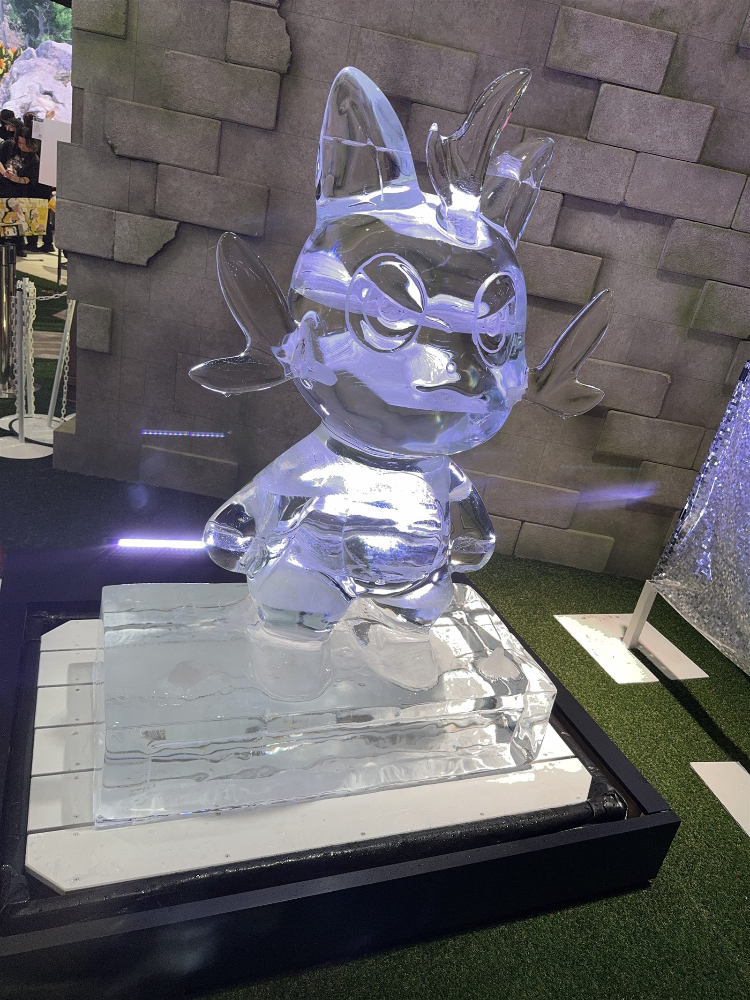
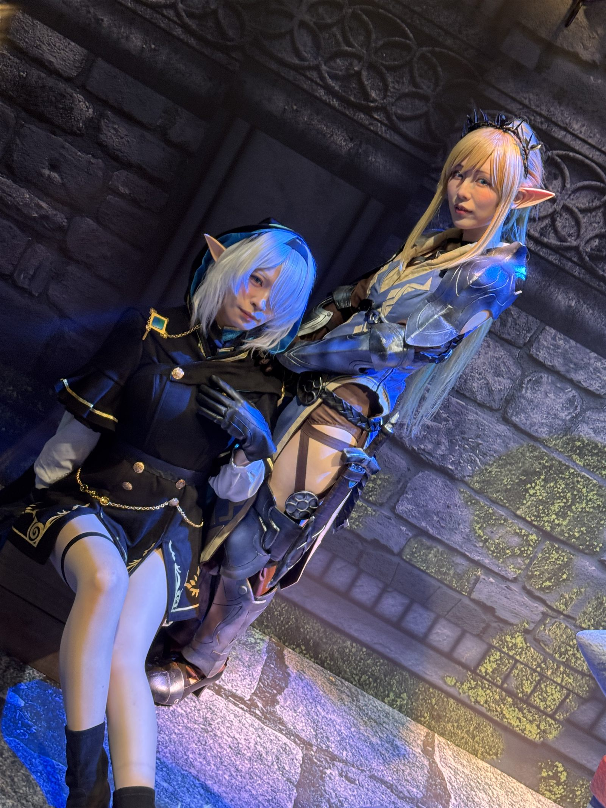
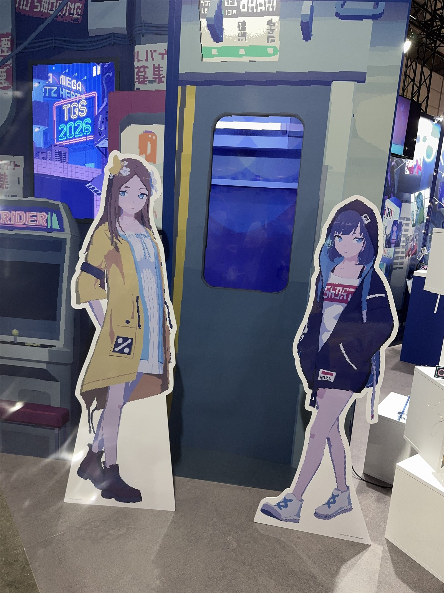
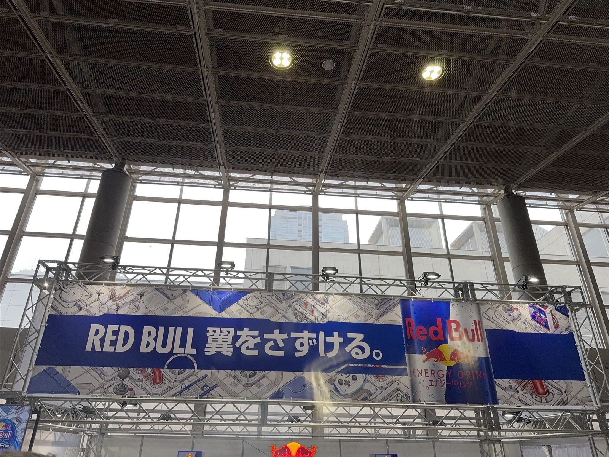

悪天候だったこともあり朝はかなりの行列ができていたものの、昼過ぎには行列が解消されており、大手の試遊機狙いでなければけっこう見やすかったと思います。
10年ぶりくらいに会場をいって、まず感じたのは、ゲームを試遊するための展示会というより、各社のプロモーションが過熱してると思った。


大きさと見た目のインパクト
各社のブースには大型モニターや巨大な展示物が並び、照明、映像、ステージ、ノベルティ配布などにもかなりのリソースが使われていた。
目立つ展示で大きさや見た目のインパクトを集客手段、SNS映えを意識している。来場者が写真や動画を撮り、XやInstagramなどへ投稿することまで想定されている。企業が広告を出すだけでなく、来場者自身に情報を拡散してもらう仕組みだろう。

キャラクターを使ったプロモーション
コスプレイヤーやキャラクターを使ったプロモーションも増えているようでブース内では撮影会も行われていた。
キャラクターの等身大パネルや立体展示、世界観を再現した撮影スペースも多い。


出展者の幅も広がっている
大手ゲーム会社だけでなく、インディーゲームや小規模な開発チーム、ゲームを専門としていない企業の出展も増えているように感じた。
ストレージ、デバイス、飲料などの企業も、製品を並べて説明するだけではなく、抽選やガチャ、体験企画を用意して来場者を集めている。ゲーム会社以外も、ゲームイベントに合った「遊び」の形にプロモーションを変換していた。

小規模なブースが埋もれやすくなる
一方で、出展者が増え、各ブースが大型化・派手化するほど、小規模なブースが埋もれやすくなる。
インディーゲームであっても、作品を展示するだけではなく、一目で伝わるビジュアルや撮影したくなる仕掛けが必要になっている。
ゲーム会社ではなく、革製品の会社がプロモでゲームを出して、レイヤーまで呼んでいたりしました。
今回のTGSでは、ゲームの面白さだけでなく、会場でどのように注目を集め、体験させ、撮影・投稿してもらうかまで含めて競争が行われていた。
以前より会場の規模も、プロモーションにかける熱量も大きくなったように感じた。
インディーや異業種を含めた出展者の増加によって、大手もインディも話題作りに今後も頭を悩ませてそうだなと思いました。